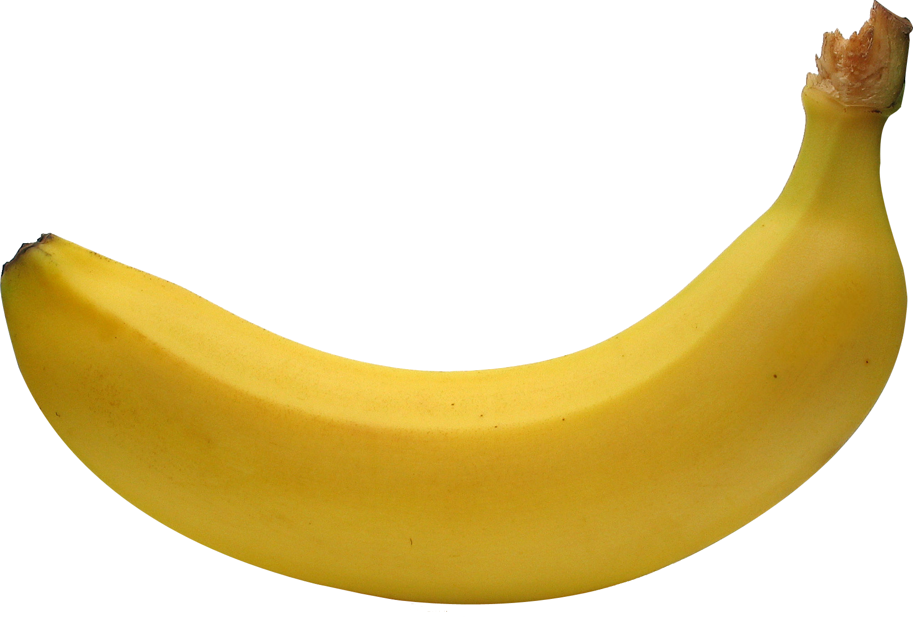

Wahrheiten über Bananen

Botanisch gesehen werden Bananen als Beeren klassifiziert, Erdbeeren hingegen nicht. Zudem teilen Bananen etwa 60 % ihrer DNA mit dem Menschen.

Botanisch gesehen werden Bananen als Beeren klassifiziert, Erdbeeren hingegen nicht. Zudem teilen Bananen etwa 60 % ihrer DNA mit dem Menschen.